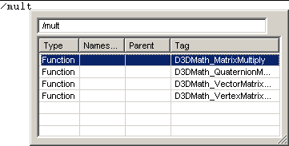

Through its tag completion commands, Workspace Whiz performs automatic completion of the partially completed tag under the cursor. Tags from which the autocompletion is determined are the same tags displayed in the Find Tag dialog. They are available from the entire workspace, including Workspace Whiz's Extra Files.
The tag autocompletion facilities are generally not context sensitive. Tag completion is more of a word completion. You start typing the word, press the tag completion key, and Workspace Whiz completes the partial tag.
